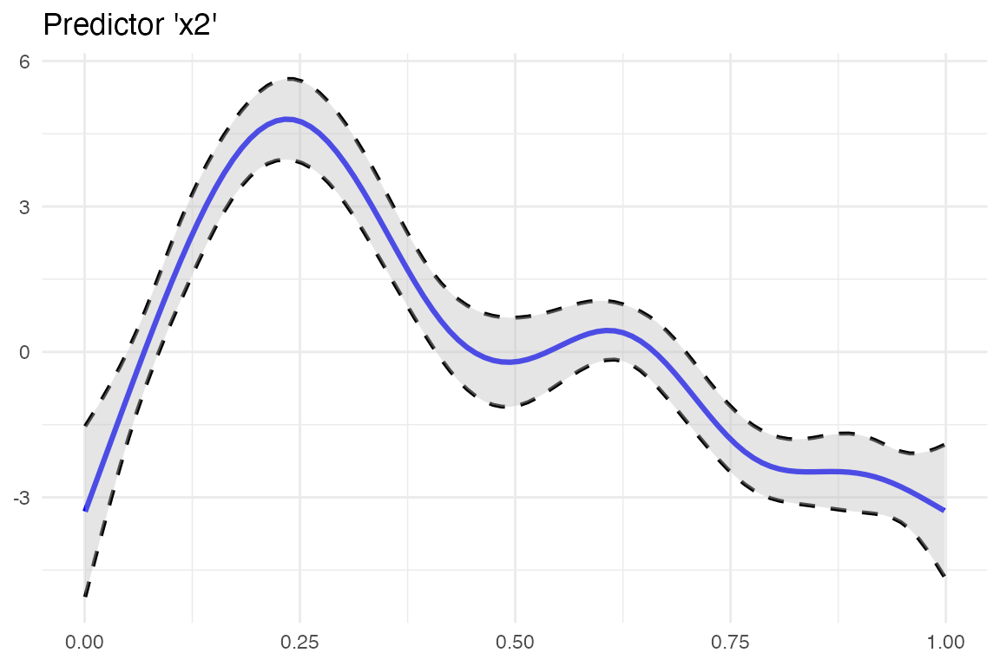
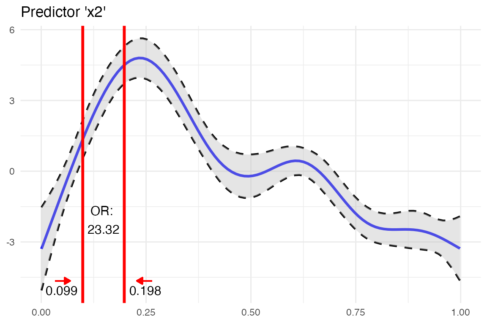
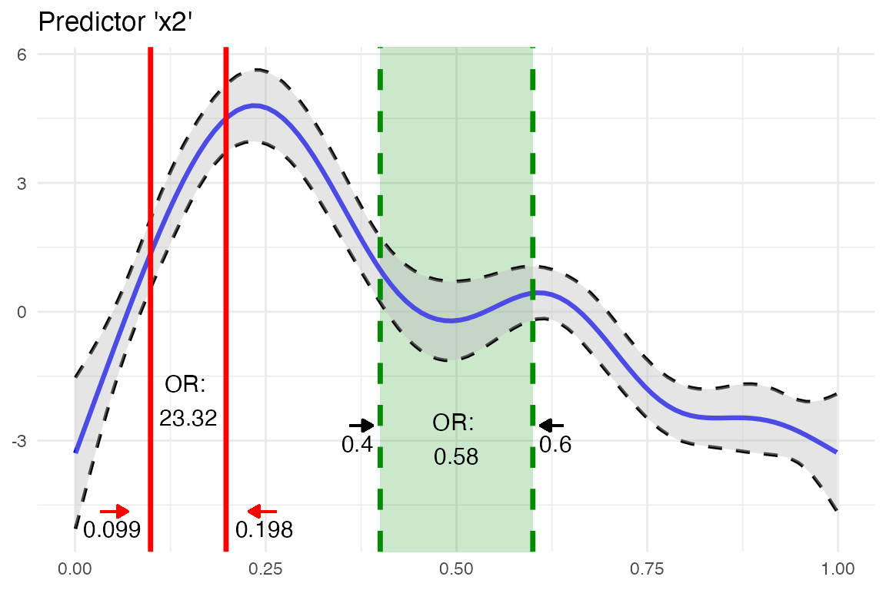

In this example we take predictor x2 (randomly chosen). First we define start and stop values via values.
or_gam(
data = data_gam, model = fit_gam, pred = "x2",
values = c(0.099, 0.198)
)
#> predictor value1 value2 oddsratio CI_low (2.5%) CI_high (97.5%)
#> 1 x2 0.099 0.198 23.32353 23.30424 23.34283Inspecting the plot we see that the odds of response y happening are 22 times higher when predictor x2 increases from 0.099 to 0.198, while holding all other predictors constant.
The detailed steps are
This result in two “log odds” values, which are subsequently transformed into “odds”. Finally, the odds ratio can be calculated from these two odds values.
or_gam() is able to handle factor variables. The levels which should be be compared need to be passed to values.
or_gam(
data = data_gam, model = fit_gam,
pred = "x4", values = c("A", "B")
)
#> predictor value1 value2 oddsratio CI_low (2.5%) CI_high (97.5%)
#> 1 x4 A B 1.377537 1.334837 1.421604Here, the change in odds of y happening if predictor x4 is changing from level A to B is rather small: an increase in odds of 37.8% can be observed.
To get an impression of odds ratio changes throughout the complete range of the smoothing function of the fitted GAM model for a specific predictor, odds ratios based on percentage steps of the predictors distribution.
Here we slice predictor x2 into five parts by extracting the predictor values in 20% steps.
or_gam(
data = data_gam, model = fit_gam, pred = "x2",
percentage = 20, slice = TRUE
)
#> predictor value1 value2 perc1 perc2 oddsratio CI_low (2.5%) CI_high (97.5%)
#> 1 x2 0.001 0.200 0 20 2510.77 1091.68 5774.53
#> 2 x2 0.200 0.400 20 40 0.03 0.03 0.03
#> 3 x2 0.400 0.599 40 60 0.58 0.56 0.60
#> 4 x2 0.599 0.799 60 80 0.06 0.06 0.06
#> 5 x2 0.799 0.998 80 100 0.41 0.75 0.22We can see that there is a high odds ratio reported when increasing predictor x2 from 0.008 to 0.206 while all further predictor increases decrease the odds of response y happening substantially.
plot_gam() helps to simplify the plotting of GAM smoothing functions in R:
library(ggplot2)
plot_gam(fit_gam, pred = "x2", title = "Predictor 'x2'") +
theme_minimal()
You can further customize the look using other colors or line types. Besides making use of the implemented arguments of the function, you can save the result of plot_gam() to an object and add more ggplot2 calls afterwards.
So far we computed the odds ratios and created a plot of a GAM smoothing function. Why not combine both? This is what insert_or()aims at. It takes
ggplot plotting object containing the smooth function andor_gam() containing information about the predictor and the respective values that should be inserted.
plot_object <- plot_gam(fit_gam, pred = "x2", title = "Predictor 'x2'")
or_object <- or_gam(
data = data_gam, model = fit_gam,
pred = "x2", values = c(0.099, 0.198)
)
plot <- insert_or(plot_object, or_object,
or_yloc = 3,
values_xloc = 0.05, arrow_length = 0.02,
arrow_col = "red"
)
plot +
theme_minimal()
The odds ratio information is always centered between the two vertical lines. Hence it only looks nice if the gap between the two chosen values (here 0.099 and 0.198) is large enough. If the smoothing line crosses the inserted text, you can correct it by adjusting or_yloc. This argument sets the y-location of the inserted odds ratio information.
Depending on the digits of your chosen values (here 3), you might also need to adjust the x-axis location of the two values so that they do not interfere with the vertical line.
Let’s do all of this by inserting another odds ratio result into this plot. This time we simply take the already produced plot as an input to insert_or() and use a new odds ratio result:
or_object2 <- or_gam(
data = data_gam, model = fit_gam,
pred = "x2", values = c(0.4, 0.6)
)
insert_or(plot, or_object2,
or_yloc = 2.1, values_yloc = 2,
line_col = "green4", text_col = "black",
rect_col = "green4", rect_alpha = 0.2,
line_alpha = 1, line_type = "dashed",
arrow_xloc_r = 0.01, arrow_xloc_l = -0.01,
arrow_length = 0.02, rect = TRUE
) +
theme_minimal()
Using rect = TRUE, you can additionally highlight certain odds ratio intervals. Aesthetics like opacity or color are fully customizable.
Fit model.
fit_glm <- glm(admit ~ gre + gpa + rank, data = data_glm, family = "binomial")For GLMs, the odds ratio calculation is simpler because odds ratio changes correspond to static predictor increases throughout the complete value range of each predictor
Hence, [or_glm()] takes the increment steps of each predictor directly as an input via argument incr. To avoid false predictor/value assignments, the combinations need to be given in a named list. Odds ratios of indicator variables are computed automatically and always refer to the base factor level.
The indicator predictor rank in this example dataset has four levels. Subsequently, we will get three odds ratio outputs referring to the base factor level (here: rank1)
The output can be interpreted as follows: “Given rank2 instead of rank1 while holding all other values constant results in a decrease in odds of 49.1% (1-0.509)”.
or_glm(data = data_glm, model = fit_glm, incr = list(gre = 380, gpa = 5))
#> predictor oddsratio ci_low (2.5) ci_high (97.5) increment
#> 1 gre 2.364 1.054 5.396 380
#> 2 gpa 55.712 2.229 1511.282 5
#> 3 rank2 0.509 0.272 0.945 Indicator variable
#> 4 rank3 0.262 0.132 0.512 Indicator variable
#> 5 rank4 0.212 0.091 0.471 Indicator variableYou can also set other confident intervals for GLM(M) models. The resulting [data.frame] will automatically adjust the column names to the specified level.
or_glm(
data = data_glm, model = fit_glm,
incr = list(gre = 380, gpa = 5), ci = 0.70
)
#> predictor oddsratio ci_low (15) ci_high (85) increment
#> 1 gre 2.364 1.540 3.647 380
#> 2 gpa 55.712 10.084 314.933 5
#> 3 rank2 0.509 0.366 0.706 Indicator variable
#> 4 rank3 0.262 0.183 0.374 Indicator variable
#> 5 rank4 0.212 0.136 0.325 Indicator variable